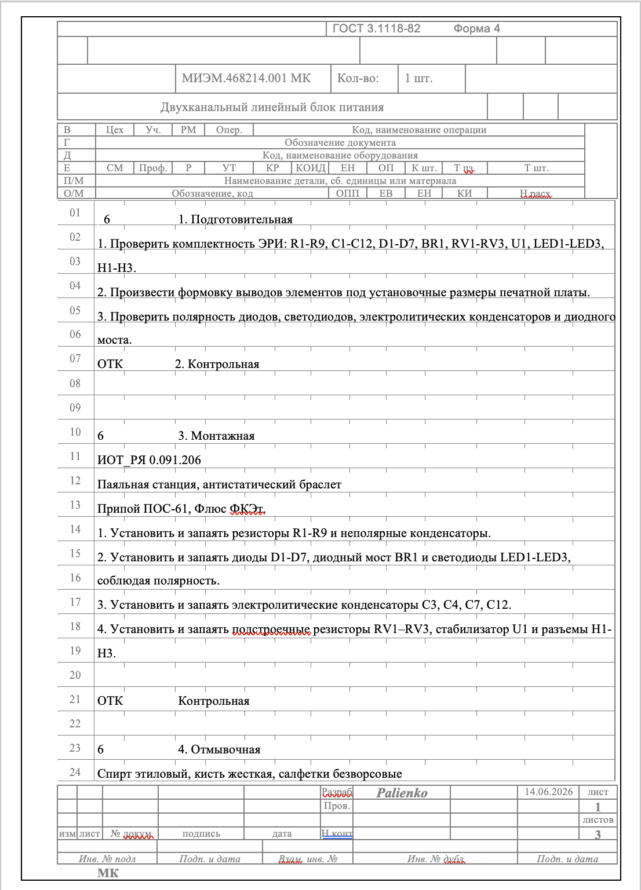
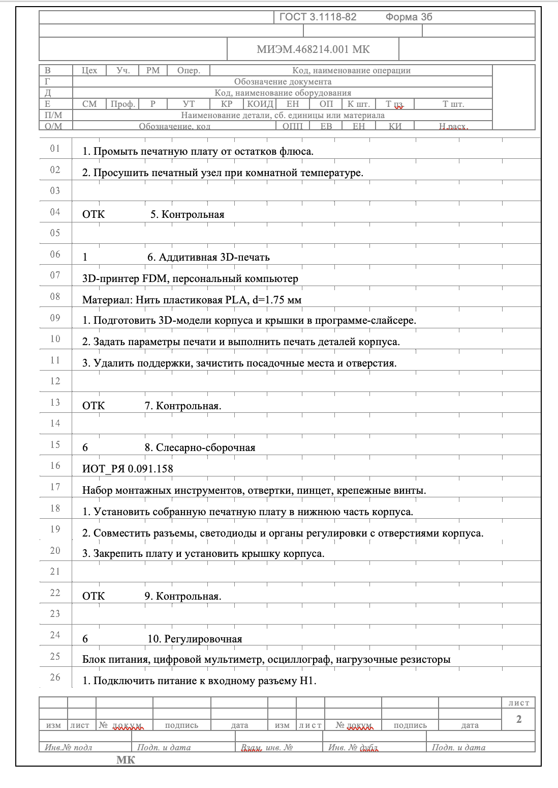
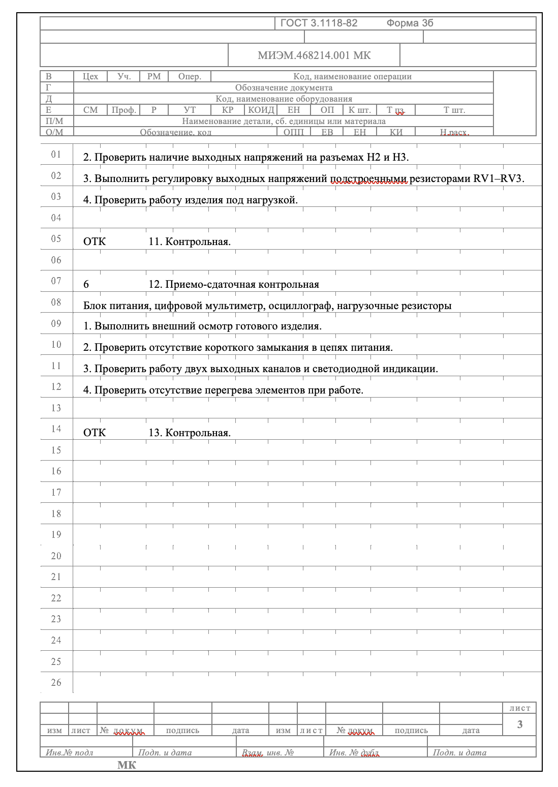

Ниже представлено видео с пошаговым процессом сборки устройства: монтаж компонентов на плату, установка платы в корпус, сборка крышки.
Маршрутная карта МИЭМ.468214.001 МК по ГОСТ 3.1118-82. Изделие: двухканальный линейный блок питания, 1 шт.


